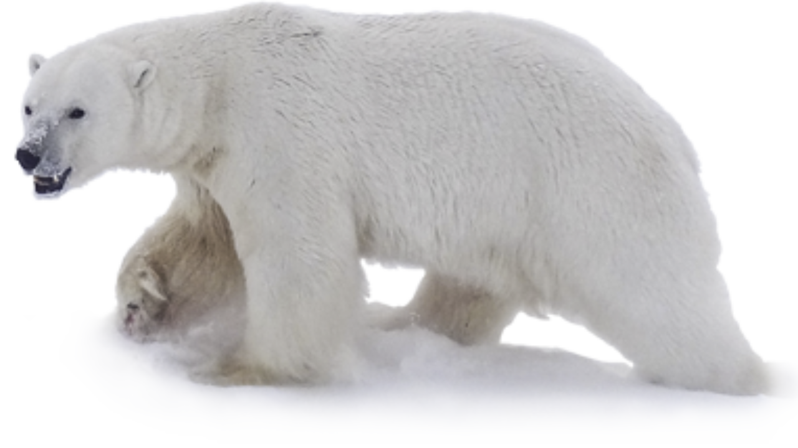

O urso-polar (nome científico: Ursus maritimus), também conhecido como urso-branco, é uma espécie de mamífero carnívoro da família Ursidae encontrada no círculo polar Ártico. Ele é o maior carnívoro terrestre conhecido e também o maior urso, juntamente com o urso-de-kodiak, que tem aproximadamente o mesmo tamanho. Embora esteja relacionado com o urso-pardo, esta espécie evoluiu para ocupar um estreito nicho ecológico, com muitas características morfológicas adaptadas para as baixas temperaturas, para se mover sobre neve, gelo e na água, e para caçar focas, que compreende a maior porção de sua dieta.
A espécie está classificada como "vulnerável" pela União Internacional para a Conservação da Natureza e dos Recursos Naturais (IUCN), com oito das dezenove subpopulações em declínio. Entre as ameaças que atingem o urso estão o desenvolvimento da região com a exploração de petróleo e gás natural, contaminação por poluentes, caça predatória e efeitos da mudança climática no habitat. Por centenas de anos, o urso-polar tem sido uma figura chave na vida cultural, espiritual e material dos povos indígenas do Ártico, aparecendo em muitas lendas e contos desses povos..

aluno:brendon - n:06 - primeiro i
aluna:ana julia - n:41 - primeiro i
aluna:leticia - n:16 - primeiro i